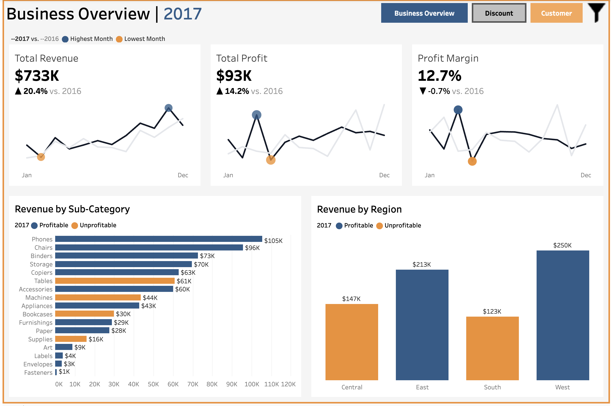

Superstore Business Performance Analysis
Four-year analysis of a $2.3M retail operation (Tableau Sample Superstore dataset, 9,993 transactions, 2014-2017) identifying the root causes of profit leakage. Used OLS regression and Welch's t-test to show that discounts of 30%+ drove a $135K net loss, found Furniture margin had collapsed to 2.49%, and used RFM customer segmentation to flag $530K in at-risk customer revenue. Findings were delivered through a three-dashboard Tableau suite.
Technologies: Python (pandas, numpy), matplotlib, seaborn, scipy, statsmodels, Tableau, Jupyter
Course / Professor: Self-directed summer project (not part of a course)